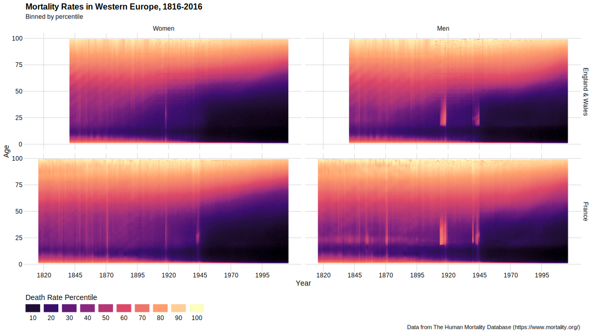
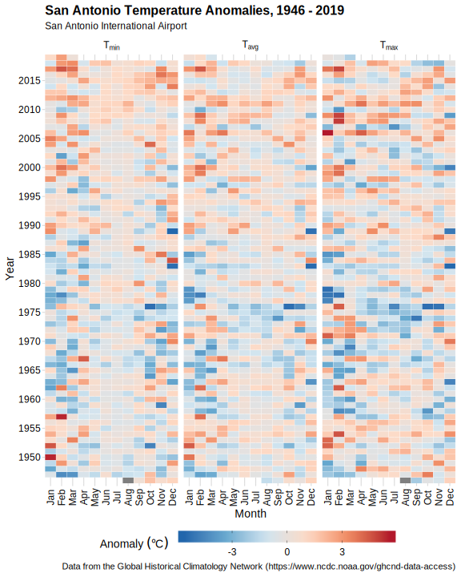

Visualization Challenges
Catch-up work
-
Work on Small Project 2!
-
Get caught up will any other assignments that you haven’t completed. This includes:
- 9 DataCamp chapters.
msleeppiesbaboon-activitiesbabynamesmapsozonespreadsheetstidy-datadata-manip1
If you’re all caught up, practice your data manipulation and plotting skills by working on the two small challenges below. I’ll post solutions after class is over.
1. Sex differences in mortality over time in Western Europe
Data:
Source: The Human Mortality Database.
- England_Mx_1x1.txt (death rates by age and year for England and Wales)
- France_Mx_1x1.txt (death rates by age and year for France)
Instructions:
- Download the
.txtfiles above. - Try to create something similar to this plot:

Hints for data manipulation:
- Check to see how the columns are delimited in the text files. Each line is the same length, and each field is in the same position in every line. Use a
readrfunction to read white-space-deparated columns that are formatted like this. - Inspect the data in the text files carefully. There are a couple of problems with the data structure that will need to be addressed when you import the files.
- The two files can be “bound” together row-wise using the
dplyrfunctionbind_rows(). Before binding, what do you need to add to each country’s data file? - Notice in the data how people >= 110 years old are coded, and why this is a problem. Since we want to treat age as a number, recode all such people to be 110 years old, and convert the column to a number.
- You can create a new column with percentile bins using the
dplyrfunctionntile(). When doing so, create 100 bins.
Hints for plotting:
- Filter out any people older than age 100 (there are some weird things going on above that age due to small sample sizes).
- Use
geom_raster(), which is likegeom_tile()but is more effective at creating a “blended” effect when you have a large number of tiles. - Facet by two variables (what are they?) using
facet_grid(). - Use a sequential color palette. I used the
viridispalette called “magma”.- By default, a color bar will be created. Change this to a discrete legend by adding this line to your plot:
guides(fill = guide_legend()). Additional options can be provided toguide_legend()to set the number of legend rows and to position the title and labels. - In your
scale_fill_function, manually set the color breaks usingbreaks = <your sequence of breaks here>.
- By default, a color bar will be created. Change this to a discrete legend by adding this line to your plot:
What interesting things does this visualization reveal about mortality patterns in these countries?
SOLUTIONS: death-rates-europe.html
Monthly temperature anomalies in San Antonio
Data:
- sat_weather.csv (Daily temperature summaries from SAT)
Source: Global Historical Climatology Network Daily.
Instructions:
- Download the
.csvfile above. - Try to create something similar to this plot:

Hints for data manipulation:
- Some rows have
tmaxandtminbut are missingtavg, while a few rows havetavgbut notmaxortmin. We cannot recovertmaxandtminwhen they are missing, but we can approximate any missingtavgvalues by taking the average oftmaxandtminfor that day. Then we need to “coalesce” the two different kinds oftavgmeasurements: use the recordedtavgif present, otherwise use the approximated one. There’s a nice function calledcoalesce()that will accomplish this for us. Given a set of vectors, it takes the first non-missing value at each position. Use it like this:mutate(tavg = coalesce(tavg, tavg_approx)). - You will need to summarize multiple variables (by which groups?) and reshape.
- You can use a grouped mutate to calculate the anomalies.
Hints for plotting:
- Use
geom_tile(). - Facet by the temperature variables using
facet_wrap(). - Use a diverging color palette centered at zero. I used the
RColorBrewerpalette called “RdBu”. - To get the diverging color scale right (centered at zero), find the largest absolute value in the new anomaly column (call it “lim”). Then use
limits = c(-lim, lim)in yourscale_fill_function.
SOLUTIONS: sat-weather.html